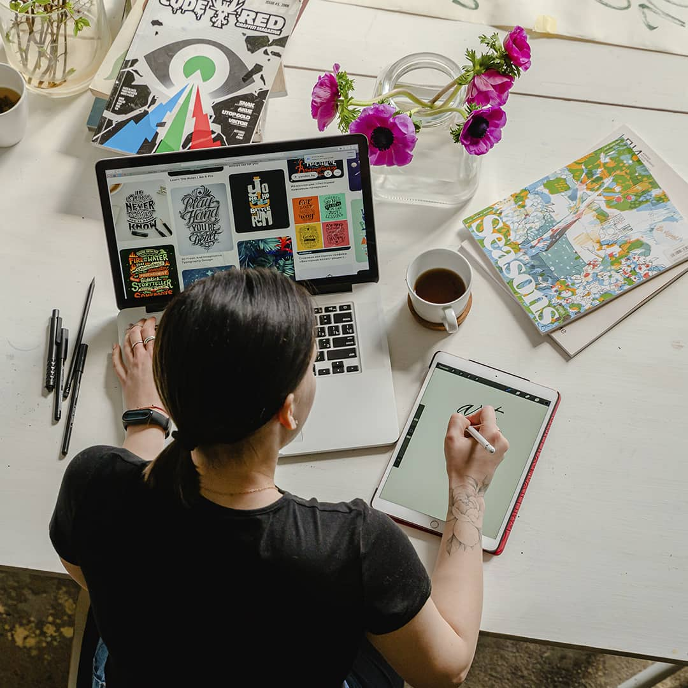
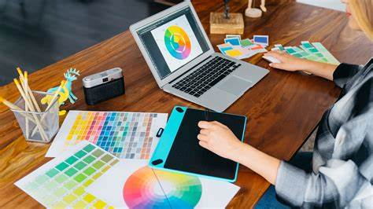
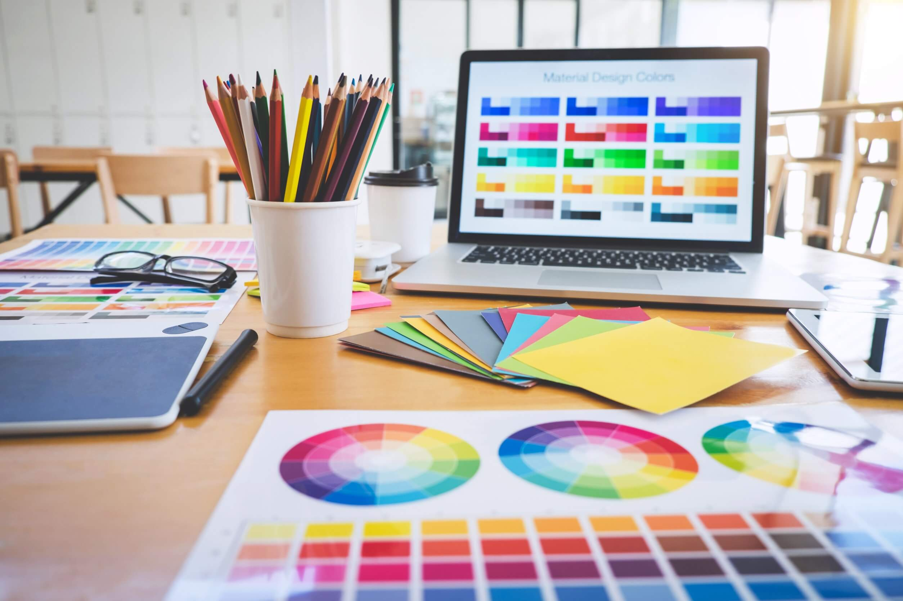

Adquirir conocimientos teóricos y prácticos en las áreas del diseño gráfico, incluyendo diseño de logotipos, diseño de carteles, diseño editorial, diseño web, entre otros. Conocer y aplicar principios y técnicas de diseño para crear soluciones creativas y estéticas en proyectos de diseño gráfico, con la finalidad de crear una empresa propia y poder crear y diseñar mis propios logotipos y campañas publicitarias, hacer una especialización en publicidad y poder manejar toda la parte de marketing de mi empresa.
El diseño gráfico es una disciplina en constante evolución y ha adquirido gran relevancia en el mundo actual, ya que su aplicación se extiende a una amplia variedad de campos, como la publicidad, el marketing, la comunicación visual, la creación de identidades corporativas y la producción editorial, entre otros. Por tanto, conocer y comprender los fundamentos del diseño gráfico es vital para poder desempeñarse en el mercado laboral y aprovechar al máximo las oportunidades profesionales que ofrece esta disciplina. Además, en la actualidad, la tecnología ha transformado el mundo y el diseño gráfico no es la excepción. La implementación de herramientas digitales en el proceso creativo de diseño gráfico ha sido un factor determinante en la evolución de esta disciplina, y se hace imprescindible contar con un espacio que recoja la información necesaria acerca de las tecnologías y aplicaciones digitales utilizadas en el diseño gráfico, así como los conocimientos teóricos que sustentan su práctica. Por tanto, el propósito de la página web es brindar información detallada y actualizada sobre la carrera de Diseño Gráfico, sus fundamentos, aplicaciones y herramientas digitales. Además, mostrará ejemplos destacados y la forma en que han influido en la sociedad. Se espera que la página web sirva como un medio para fomentar el interés en la carrera de Diseño Gráfico, así como para guiar a los estudiantes interesados en su estudio. En conclusión, el desarrollo de una página web sobre la carrera de Diseño Gráfico es importante, ya que permitirá un acceso fácil y rápido a la información relevante y actualizada sobre esta disciplina en constante evolución.
4.1.1 ¿Que se necesitan los estudiantes del León de Greiff para diferenciar entre los distintos tipos de diseños y sus diversas aplicaciones?
4.1.2 ¿Qué tipos de estructuras o de organización de la información atraerán a la población del león de Greiff para su fácil navegación y obtención de información?
4.1.3 ¿Cuál sería la estrategia más efectiva para alcanzar a los estudiantes del León de Greiff a través del sitio web?
4.1.4 ¿Como los estudiantes del Leon de Greiff encontrarán el orden de la página?
4.1.5 ¿Qué se requiere para que la página web consiga un resultado final de diseño gráfico de calidad y llegue a los Estudiantes del León de Greiff?
1) Se usarán los softwares de programación sublime text para el código fuente original y Bootstrap para los estilos de botones, textos, imágenes etc.
Css
Html
bootstrap
2) El hardware requerido para la elaboración de la página web son los comunes, teclado, ratón, monitor, una memoria RAM, procesador.
3) Se usarán los siguientes tipos de botones:
- Botones grandes con las medidas: lg
- Botones pequeños con las medidas: sm
- Botones con estilos personalizados con estilos CSS
4) Se usarán colores cálidos para los botones como, por ejemplo, naranjas amarillos y rojos
5) Para el fondo se elegirán colores grisáceos, como para título, barras y el fondo principal, siendo los botones resaltantes a la vista, pues estos son colores cálidos.
6) Se usarán las animaciones: Fade-in y Slide-in para títulos y subtítulos.
Para finalizar, el objetivo de este proyecto fue mostrar el procedimiento de recolección de información y ciertos pasos para crear una página web sobre nuestra carrera de interés (Diseño gráfico) para los estudiantes y docentes del colegio León de Greiff en Cali-Colombia. Se incluirá información los fundamentos del diseño gráfico, los tipos y como se ve en la vida cotidiana, aparte de su propósito, importancia etc. También busca crear cierto interés sobre la carrera por medio de metodologías y una malla académica referente a la universidad autónoma de Colombia. Es evidente, que se busca promover una iniciativa hacia el diseño gráfico y sus variantes, aplicando así a los distintos sectores de Cali-Colombia, en este caso a Villa Colombia y a los estudiantes del Colegio León de Greiff, dónde se busca incentivar a la “explotación” de sus capacidades para un buen desarrollo de diseño gráfico. Se puede observar, además, que se tiene un gran soporte en cuanto a carreras y de esa forma cada persona puede escoger lo que más le guste o lo que mejor le parezca, abriendo nuevas oportunidades y caminos para los diferentes habitantes de Cali-Colombia y sobre todo los ubicados en el barrio Villa Colombia, de esta forma, se planea motivar a todos y cada uno de los estudiantes del Colegio León de Greiff a participar en las diferentes carreras y actividades propuestas. Tal como esta investigación ha demostrado, los estudiantes del Colegio León de Greiff poseen un gran potencial para el diseño gráfico y el desarrollo de sus variantes, por lo que se busca motivar y retar a todos los individuos a que superen las “pruebas” que les ofrece la carrera de diseño gráfico, para que de esta forma se confirme y quede en evidencia las capacidades de los estudiantes. Por consiguiente, el proyecto fue realizado con el único y exclusivo propósito de llamar la atención de otros y nutrir a base de datos e información verificada, su conocimiento, para que puedan conocer las personas de diferentes sectores de Cali-Colombia cómo funciona la carrera de diseño gráfico y cuáles son las ventajas que ofrece, además hace un llamado a los estudiantes del Colegio León de Greiff que se encuentran ubicados en el barrio Villa Colombia, a que participen de esta asombrosa carrera donde podrán pasar agradables ratos, encontrar algo de su agrado y formarse para su vida profesional.